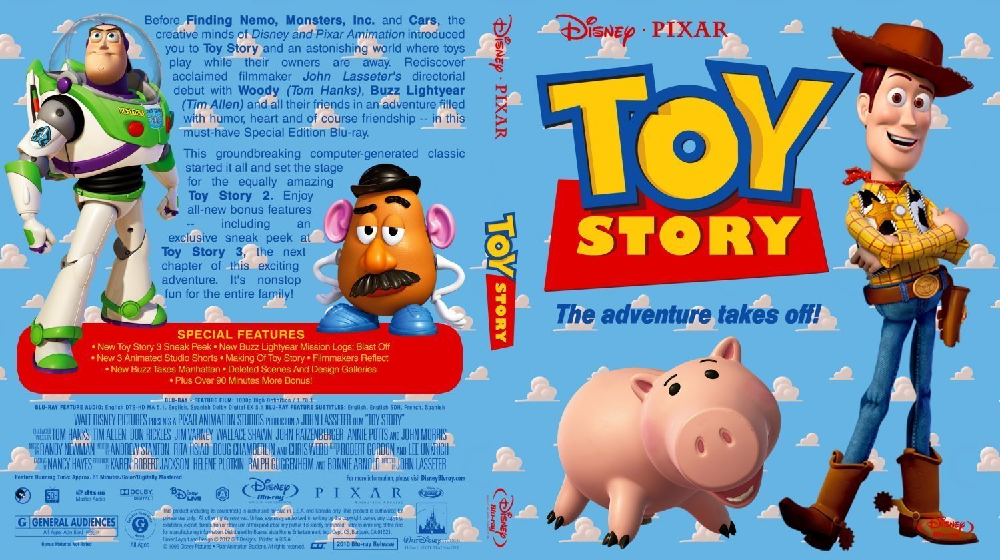
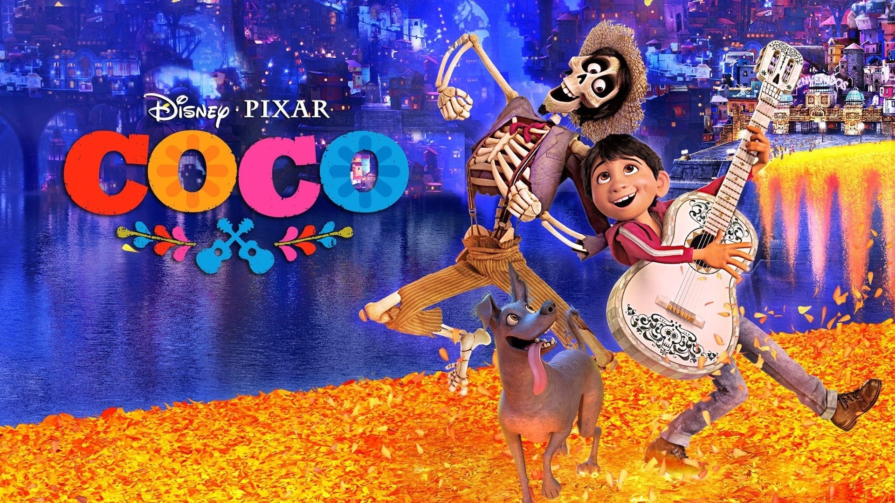
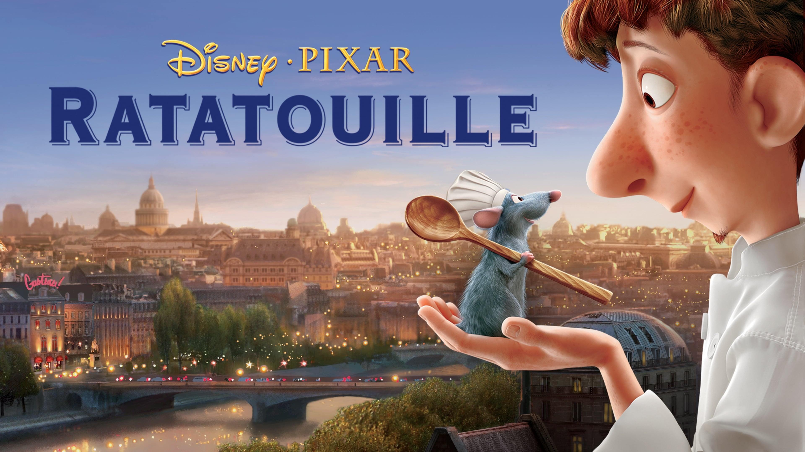

| Synopsis | Cast and Directors | Movie Review | |
|---|---|---|---|
|  | A young boy whose name is Andy is a kid who loves playing with his toys, it turns out that his toys can move. Woody, who is a cowboy and Buzz Lightyear, who is a spaceranger are both Andy's toys. They both become buddies and go through challenges and adventures together. | Cast: Tom Hanks, Tim Allen, Annie Pots Director: John Lasseter | IMDb Rating: 8.3/10 |
|  | A boy named Miguel Rivera lives In Santa Cecilia, Mexico loves music. He wanted to be a musician and play music his whole life. Though, his family dislikes music due to a bad history with music. When his family found out he was musically inclined, they got enraged and Miguel ran from his family Miguel wanted to join a Music Festival but he had no guitar so he went to Ernesto De La Cruz' guitar and stole it but ended up in the Land of the Dead. | Cast: Anthony Gonzales, Gael Garcia Bernal, Benjamin Bratts Director: Lee Unkrich | IMDb Rating: 8.4/10 |
|  | A rat named Remy is not an ordinary rat but is a gifted rat who loves to cook. Him and his rat family got seperated due to a storm, and while Remy was finding a home to stay, he saw a restaurant's garbage boy named Alfredo Linguini. Linguini tried to fix the soup but instead messed it up, so Remy decided to fix it. But Linguini caught him. They both found out that Remy could control Linguini using his hair and after that They both become buddies and helped each other become chefs. | Cast: Patton Oswalt, Ian Holm, Lou Romano Director: Brad Bird | IMDb Rating: 8.1/10 |